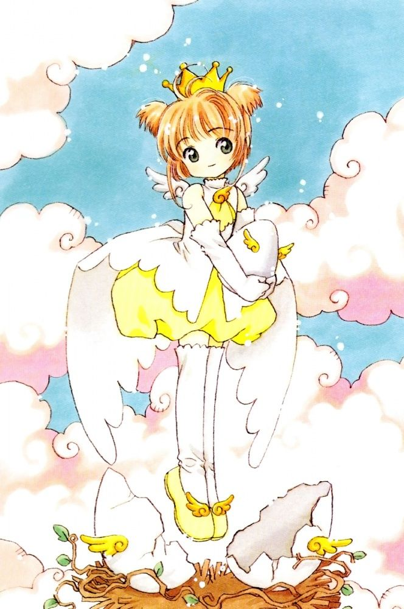

La Sakura era una estudiant de primària de l'escola Tomoeda, una nena alegre i una mica poruga, fins que un dia va baixar al soterrani de casa seva. Allà va trobar un llibre antic anomenat "The Clow". En obrir-lo, va provocar accidentalment que totes les cartes màgiques s'escapessin volant per tota la ciutat.
Dins del llibre hi dormia en Kero, el guardià de les cartes, que en veure el desastre, va nomenar la Sakura com a Caçadora de Cartes (Card Captor). Des d'aquell moment, la seva vida va canviar completament: Ha de portar una doble vida: nena normal de dia i protectora de la màgia de nit. Ha de capturar totes les cartes abans que causin una catàstrofe al món. Compta amb l'ajuda de la seva millor amiga, la Tomoyo, que li dissenya vestits increïbles i ho grava tot en vídeo.